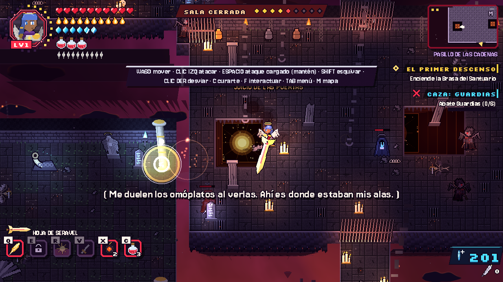
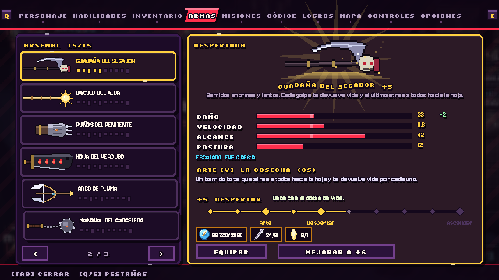
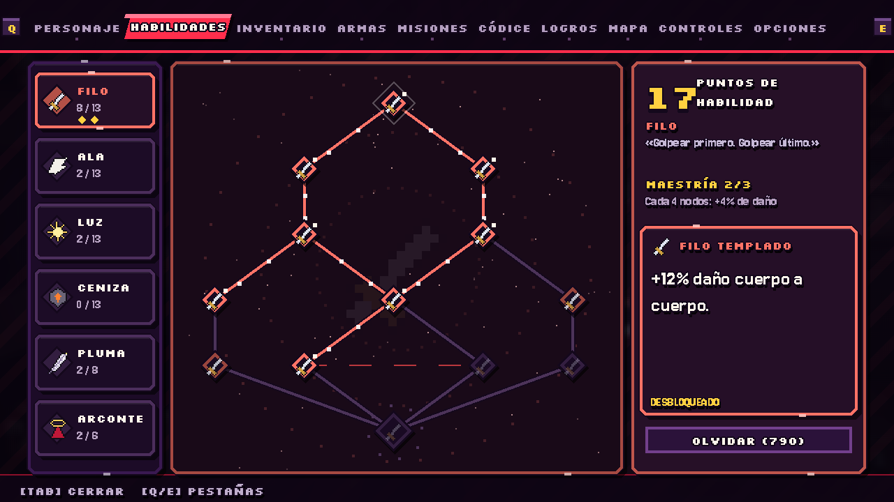
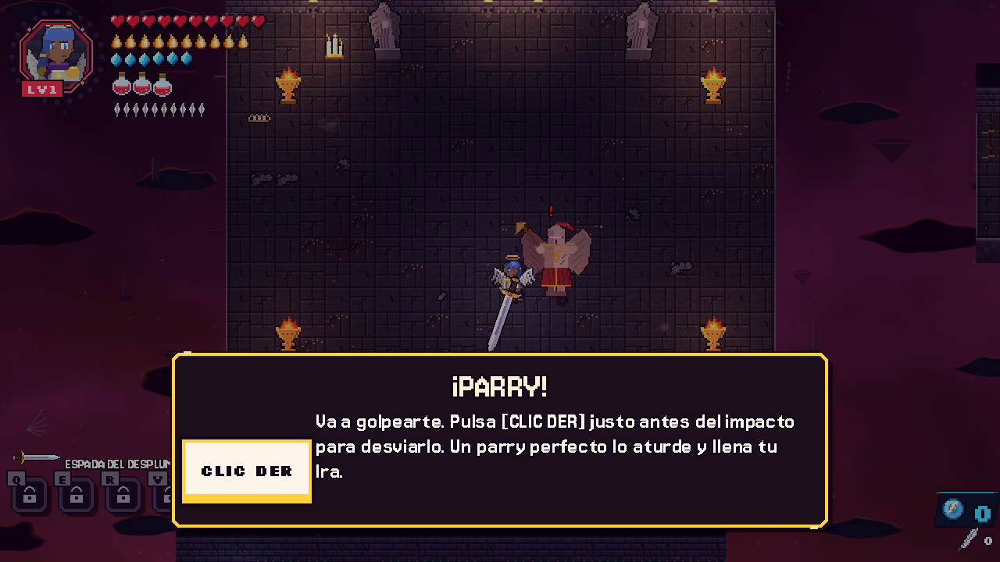
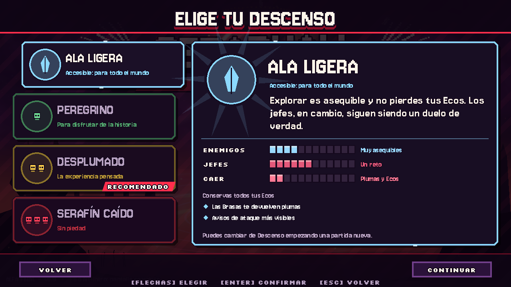

Qué es Seraphall
Hace mil años, el Dios Arquitecto encerró a los ángeles caídos en la Espiral, un mundo prisión que desciende hacia el Abismo. Desciende por sus cuatro Estratos, derrota a los Arcontes que los guardan y descubre quién es el verdadero carcelero. Tus decisiones inclinan la balanza del destino.
Características
- Combate exigente: combos propios de cada arma, parry perfecto con réplica, esquivas y postura.
- 15 armas con su propio arte: guadaña, mangual, maza, arco, báculo y más, cada una con una técnica única que despierta al mejorarla.
- Jefes épicos en cualquier dificultad: varias fases, Furia Final y Cataclismo.
- Árbol de habilidades con 66 nodos en 6 ramas, con elecciones excluyentes y Estigmas.
- Cooperativo para 2: por red local o por Internet con un código de partida.
- Prólogo guiado que te enseña a pelear paso a paso, 4 dificultades, 3 huecos de partida y creador de personaje.
- En español e inglés, con música original.
Capturas




Cómo jugar
- Descarga Seraphall-Windows.zip y descomprímelo.
- Abre Seraphall.exe. Si Windows avisa de que protegió tu PC, pulsa Más información → Ejecutar de todas formas, porque el juego no está firmado digitalmente.
| Acción | Teclado y ratón |
|---|---|
| Moverse | WASD |
| Atacar / Ataque cargado | Clic izquierdo / Espacio |
| Esquivar / Parry | Shift / Clic derecho |
| Curarse / Interactuar | C / F |
| Menú / Mapa | Tab / M |
También se puede jugar con mando, y los controles se pueden cambiar en el juego.
In English
Seraphall: The Fall of the Seraph is a free top-down 2D action RPG with 2-player co-op. You play a Featherless, a fallen angel descending the Spiral, and every death tears a feather from your wings. Download it for free for Windows.